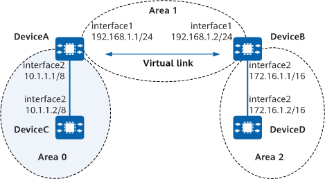

Example for Configuring an OSPF Virtual Link
Networking Requirements
As shown in Figure 1, area 2 is not directly connected to the backbone area (area 0). Area 1 serves as a transit area to connect area 2 and area 0, and a virtual link is configured between DeviceA and DeviceB.

In this example, interface 1 and interface 2 represent 10GE 0/0/1 and 10GE 0/0/2, respectively.

Device |
Router ID |
Process ID |
IP Address |
DeviceA |
1.1.1.1 |
1 |
Area 0: 10.0.0.0/8 Area 1: 192.168.1.0/24 |
DeviceB |
2.2.2.2 |
1 |
Area 1: 192.168.1.0/24 Area 2: 172.16.0.0/16 |
DeviceC |
3.3.3.3 |
1 |
Area 0: 10.0.0.0/8 |
DeviceD |
4.4.4.4 |
1 |
Area 2: 172.16.0.0/16 |
Precautions
The default parameter values are recommended when a virtual link is configured; however, you can modify the parameter values according to the actual scenario:
- The smaller the hello value, the faster the device detects network topology changes, but the more network resources are consumed.
- If retransmit is set to too small a value, unnecessary LSA retransmission may occur. Therefore, setting the parameter to a large value is recommended on a low-speed network.
- The authentication modes of a virtual link and the backbone area must be the same.
- To improve security, OSPF area authentication or interface authentication is recommended. For details, see "Improving OSPF Network Security." OSPF area authentication is used as an example. For details, see "Example for Configuring Basic OSPF Functions."
Procedure
- Assign an IP address to each interface.
Assign an IP address to each interface according to Figure 1. For detailed configurations, see Configuration Scripts.
- Configure basic OSPF functions.
For detailed configurations, see the configuration scripts.
- Check information about the OSPF routing table on DeviceA.
[DeviceA] display ospf routing
OSPF Process 1 with Router ID 1.1.1.1 Routing Tables Routing for Network Destination Cost Type NextHop AdvRouter Area 10.0.0.0/8 1 Transit 10.1.1.1 3.3.3.3 0.0.0.0 192.168.1.0/24 1 Transit 192.168.1.1 1.1.1.1 0.0.0.1 Total Nets: 2 Intra Area: 2 Inter Area: 0 ASE: 0 NSSA: 0The routing table on DeviceA contains no route in area 2, because area 2 is not directly connected to area 0.
- Configure a virtual link.
# Configure DeviceA.
[DeviceA] router id 1.1.1.1 [DeviceA] ospf 1 [DeviceA-ospf-1] area 1 [DeviceA-ospf-1-area-0.0.0.1] vlink-peer 2.2.2.2 [DeviceA-ospf-1-area-0.0.0.1] quit [DeviceA-ospf-1] quit
# Configure DeviceB.
[DeviceB] router id 2.2.2.2 [DeviceB] ospf 1 [DeviceB-ospf-1] area 1 [DeviceB-ospf-1-area-0.0.0.1] vlink-peer 1.1.1.1 [DeviceB-ospf-1-area-0.0.0.1] quit [DeviceB-ospf-1] quit
Verifying the Configuration
# Check the OSPF virtual link information on DeviceA.
[DeviceA] display ospf vlink
OSPF Process 1 with Router ID 1.1.1.1
Virtual Links
Virtual-link Neighbor-id -> 2.2.2.2, Neighbor-State: Full
Interface: 192.168.1.1 (10GE0/0/1)
Cost: 1 State: P-2-P Type: Virtual
Transit Area: 0.0.0.1
Timers: Hello 10 , Dead 40 , Retransmit 5 , Transmit Delay 1
GR State: Normal
The preceding command output shows that the OSPF virtual link neighbor relationship is in Full state, indicating that the virtual link is configured successfully.
# Check information about the OSPF routing table on DeviceA.
[DeviceA] display ospf routing
OSPF Process 1 with Router ID 1.1.1.1
Routing Tables
Routing for Network
Destination Cost Type NextHop AdvRouter Area
172.16.0.0/16 2 Inter-area 192.168.1.2 2.2.2.2 0.0.0.2
10.0.0.0/8 1 Transit 10.1.1.1 1.1.1.1 0.0.0.0
192.168.1.0/24 1 Transit 192.168.1.1 1.1.1.1 0.0.0.1
Total Nets: 3
Intra Area: 2 Inter Area: 1 ASE: 0 NSSA: 0
After the virtual link is configured, the routing table on DeviceA contains the route in area 2.
Configuration Scripts
-
# sysname DeviceA # router id 1.1.1.1 # interface 10GE0/0/1 ip address 192.168.1.1 255.255.255.0 # interface 10GE0/0/2 ip address 10.1.1.1 255.0.0.0 # ospf 1 area 0.0.0.0 network 10.0.0.0 0.255.255.255 area 0.0.0.1 network 192.168.1.0 0.0.0.255 vlink-peer 2.2.2.2 # return
-
# sysname DeviceB # router id 2.2.2.2 # interface 10GE0/0/1 ip address 192.168.1.2 255.255.255.0 # interface 10GE0/0/2 ip address 172.16.1.1 255.255.0.0 # ospf 1 area 0.0.0.1 network 192.168.1.0 0.0.0.255 vlink-peer 1.1.1.1 area 0.0.0.2 network 172.16.0.0 0.0.255.255 # return
-
# sysname DeviceC # router id 3.3.3.3 # interface 10GE0/0/2 ip address 10.1.1.2 255.0.0.0 # ospf 1 area 0.0.0.0 network 10.0.0.0 0.255.255.255 # return
-
# sysname DeviceD # router id 4.4.4.4 # interface 10GE0/0/2 ip address 172.16.1.2 255.255.0.0 # ospf 1 area 0.0.0.2 network 172.16.0.0 0.0.255.255 # return